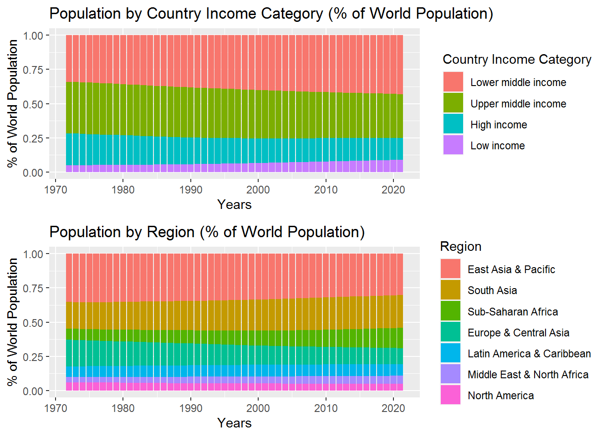
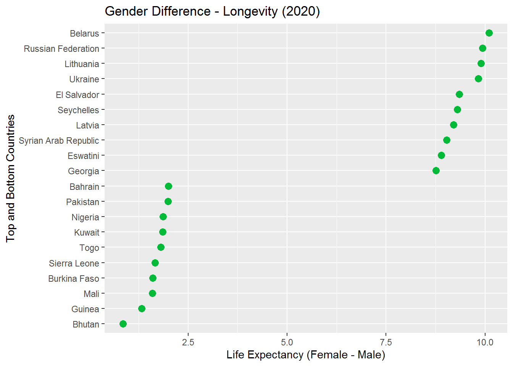

Chapter 4 Results
4.1 Current situation and historical trends
Question 1: How have the world and regional populations evolved over the past 5 decades?

Question 2: Which regions have the youngest / oldest population?
For this question, we’re divided population into three age groups: 0-14, 15-64, 65 and above, representing young, working age, and old respectively.
- The first plot takes snapshots of all the regions together. Since 1980, Sub-Saharan Africa always have the highest percentage of young people and the lowest percentage of old people, probably due to the high birth rate and low longevity. While North America and Europe & Central Asia are on the other extreme, probably because they have low birth rates and high longevity. The ranking barely changed over the decades.
- The second plot presents each individual region through time. Every region has a gradually aging population. Changes for Sub-Saharan Africa, North America, and Europe & Central Asia have been small, while the rest of the world have experienced more significant changes. A plausible explanation could be: Sub-Saharan Africa has maintained its high birth rate, while North America and Europe & Central Asia had less room for further aging.
Question 3: Which regions have had the highest / lowest birth rate, death rate, and population growth?

Question 4: How have birth rates changed cross-sectionally by country?
Question 5: How has world longevity evolved over the past decades?
Question 6: Is there any gender asymmetry in the birth rate and longevity?
Some data are unavailable yet for 2021, thus we use 2020.
- The first plot shows birth ratio (male/female). The natural birth ratio is around 103-107 boys per 100 girls. Ratios above that range might reflect gender selection towards boys.
- Surprisingly, middle income countries are more leaned towards gender selection. ** Region-wise, South Asia and East Asia & Pacific have the highest tendency of gender selection. These are the regions with highest population density, and having cultural emphasis on farming (prefers more boys).
- Country-wise, it is not surprising that China, Vietnam, India, and Pakistan are among the highest, based on the same argument above.
- The second and third plots show life expectancy for female and male.
- Not surprisingly, women lives longer than men in every country.
- The greater gender gaps appear mostly with East European countries, where men’s life expectancy might be shortened due to the culture of drinking alcohol. The lower gender gaps are associated with the most underdeveloped countries where both men and women live short.

4.2 Pattern and relationships
Question 7: How do other demographic factors affect birth rate?
Female age brackets data is unavailable yet for 2021, thus we use 2020. Women’s age at first marriage data is collected at different frequencies for each country. We choose a recent year 2018 which has more observations.
Birth rate is probably affected by other demographic factors such % women at young adulthood (of total population) (call it “% young women”) and women’s average age at first marriage.
- Observations from the first plot:
- In 1980, there did not appear to be a positive correlation between birth rate and % young women. There was a cluster of countries with lower % women, yet high birth rate. These are primarily African or Middle Eastern countries.
- Compare 2020 to 1980, The overall birth rate range significantly decreased.
- In 2020, birth rate and % young women show negative correlation, especially in the lower birth rate range. Many developed countries are low (both in absolute terms and in comparison with 1980) in both measures (e.g. Japan, Italy, Spain), consistent with common impression. Low values in both factors have probably had mutual influence over time.
- Observations from the second plot:
- There appear to be a strongly negative correlation between birth rate and women’s average age at first marriage.
Question 8: How do non-demographic factors (economic, healthcare, and education) affect birth rate?
Birth rate is probably affected by economic, healthcare, and education factor. Here we examine these factors: female work force (% of total work force), GNI (Gross National Income) per capita, government health expenditure (% of GDP), government education expenditure (% of GDP), female college enrollment rate (%). All factors are standardized for the PCA biplot.
- It’s intuitive that GNI per capita and female college enrollment rate appear strongly negatively correlated with birth rate.
- Government health and education expenditures appear uncorrelated with birth rate.
- Surprisingly, Female work force percentage appears strongly positively correlated with birth rate. Looking further into the specific countries, we see that countries high in both measures are mostly underdeveloped countries. Woman counted as work force in these countries might be mostly doing flexible work which does not conflict with their childcare a lot.
Question 9: How does income category affect longevity?
Question 10: How does income category affect death rates of difference causes?
Question 11 How do labor force and quality affect economic development?